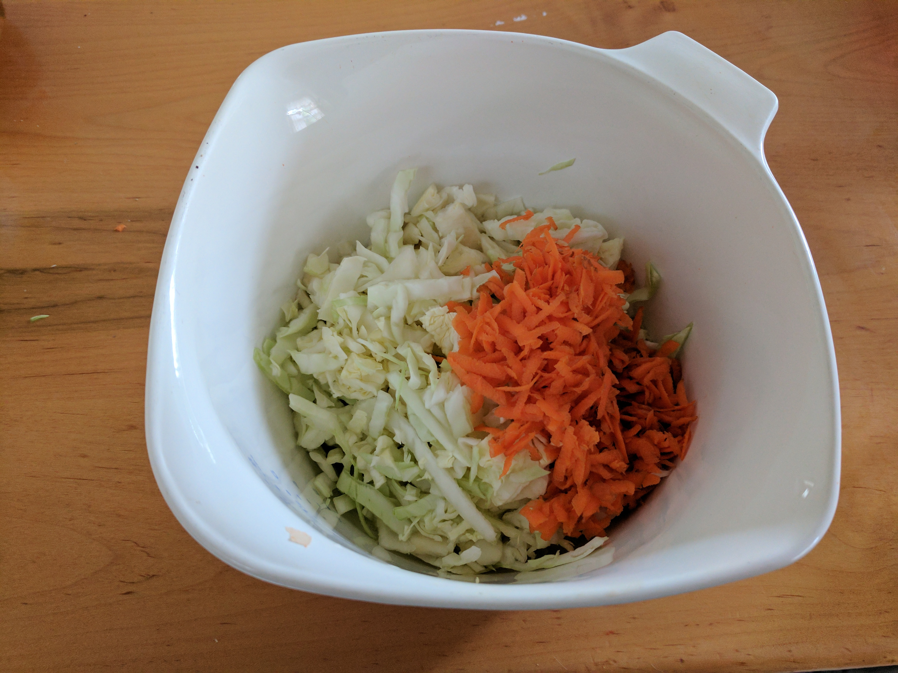

Cole Slaw
This recipe tastes great, and costs significantly less than buying pre-made coleslaw. If you are more of a fan of savory coleslaw, cut down on sugar and add flavors of your choosing like garlic powder or hot sauce. One of the best parts about coleslaw is many different flavors go well with it, so see what you can come up with!
Ingredients
- 3 cups shredded cabbage (about half a head)
- 1/2 cup shredded carrot
- 1/2 cup mayonnaise
- 2 tablespoons of sugar
- 2 teaspoons of apple cider vinnegar or 1 tablespoon of white wine vinnegar
- Salt and pepper
How to cook
- Shred and combine the carrots and cabbage in a large bowl.
- In a separate bowl, combine the other ingredients.
- Mix dressing and veggies together and chill.
- 
Have any questions or comments about this recipe? Contact us.